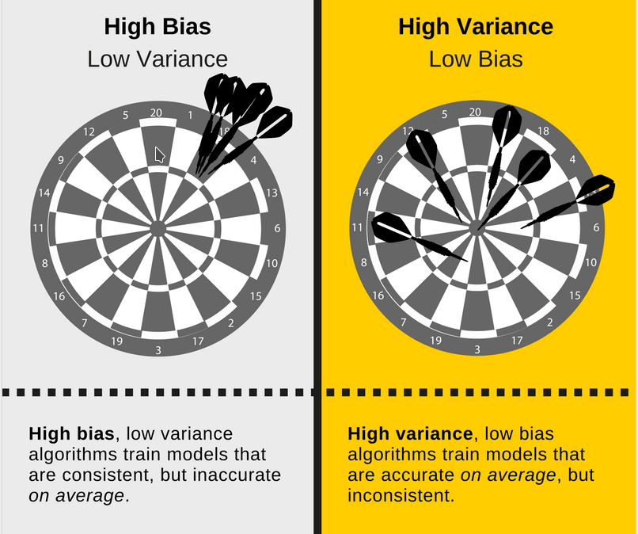
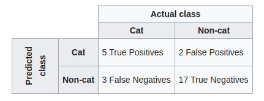
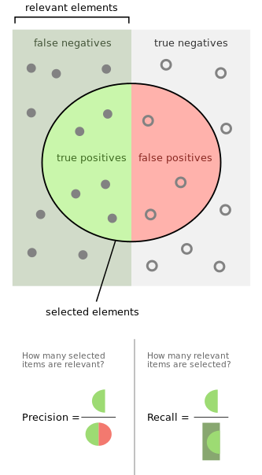

ML
Retos ML
¿Qué es Generalización?
"Refers to your model's ability to make correct predictions on new, previously unseen data as opposed to the data used to train the model."
¿Que es generalización?
Predicción Entrenado vs Realidad (Nuevos datos)
The fundamental tension of machine learning is between fitting our data well, but also fitting the data as simply as possible
Ockham Razor
Sesgo vs Varianza
Bias vs Variance
História de Brian

- Datos
- Modelo
- Entrenamiento
Primero el objetivo y los datos!
Cantidad insuficiente de datos entrenamiento

Datos no representativos
Mala calidad de los datos
Características irrelevantes
Extracción y selección de Características
Color de la fruta
Ahora el modelo
¿Qué Modelo?
Trade-offs
- Velocidad
- Precisión
- Complejidad Modelo
- Precisión conjunto entrenamiento vs pruebas
- Tamaño conjunto datos
- Cantidad parámetros
- Overfitting vs Underfitting
Entrenamiento
Generalización
Comparar-Medir Soluciones
Generalización
Colab
Learning Rates
Medidas Comparación
Regresión
Clasificación
Regresión
Matriz de confusión
Clasificación
Precision and Recall
Precisión y Exhaustividad
$TP$ = True positive
$FP$ = False Positive
$FN$ = False Negative
$TN$ = True Negative
$Precision= \frac{TP}{TP+FP}$
$Recall=\frac{TP}{TP+FN}$
Clasificación
F1 Score
$\frac{2TP}{2TP+FP+FN}$